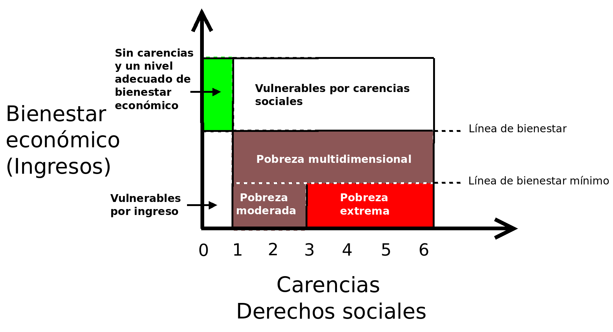

Método de clasificación
En la siguiente figura, en el eje vertical se representa el espacio del bienestar económico, el cual se mide por medio del ingreso de las personas. La línea de pobreza por ingresos permite diferenciar si las personas tienen un ingreso suficiente o no. Mientras que en el eje horizontal se representa el espacio de los derechos sociales, medido con el índice de privación social (conteo de carencias).
De acuerdo con esta figura, una vez determinado su ingreso y su índice de privación social, cualquier persona puede ser clasificada en una, y solo una, de las anteriores regiones.